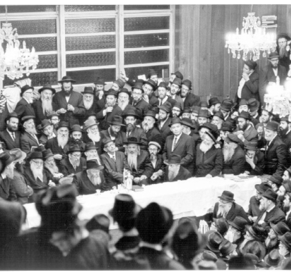

הת’ דוד מאיר דרוקמן
לפני 46 שנה, בעת שהותו של הת’ דוד מאיר דרוקמן בשנת ה’קבוצה’ בבית חיינו, שיגר מכתב מרגש אל ידידו הרב יגאל פיזם, בו מגולל בתיאורים חיים את התרשמותו והתפעלותו מתשרי הראשון בחייו במחיצתו הק’ של הרבי מלך המשיח • הקשר ביניהם החל חמש שנים קודם לכן, בשנת תשכ”ג, בעת התקרבותו של הרב דרוקמן לחב”ד שלמד אז בישיב
לפני 46 שנה, בעת שהותו של הת’ דוד מאיר דרוקמן בשנת ה’קבוצה’ בבית חיינו, שיגר מכתב מרגש אל ידידו הרב יגאל פיזם, בו מגולל בתיאורים חיים את התרשמותו והתפעלותו מתשרי הראשון בחייו במחיצתו הק’ של הרבי מלך המשיח • הקשר ביניהם החל חמש שנים קודם לכן, בשנת תשכ”ג, בעת התקרבותו של הרב דרוקמן לחב”ד שלמד אז בישיבת בני עקיבא ‘כפר הרוא”ה’. משם המשיך את לימודיו בישיבת ‘פרחי אהרן’ והיה תלמיד של הרב פיזם שכיהן באותה עת כמשגיח ומורה למחשבת ישראל • בשנים ההן החל הרב פיזם – השליח הראשון בקריות, ראש ישיבת תות”ל ורב קהילת חב”ד בקרית שמואל – לזרוע את זרעי המהפכה החב”דית באזור. לימים, יצטרף אליו הרב דרוקמן כרב קהילת חב”ד בקריות ורב העיר קרית מוצקין • המחזה שצדיק דורנו עולה על הכסא ו”מנצח” על קהל האלפים, הפחד שתפס את החסיד צאנז ש”פעם ראשונה הרגיש פחד מרבי”, הרגע שהרבי הליט בידו את פניו הק’ ופרץ בבכי חרישי… • מסמך מרתק

ידיד נפשי היקר וכו’ ר’ יגאל שיחי’,
שלום וברכה וכל טוב סלה!
אחרי דרישת שלומך הטוב ושלום בני ביתך שיחיו,
באיזה דבר תורה אפתח, ומה אתחיל לתאר, ימי החגים עברו כאן – בליובאוויטש, מתוך התרוממות הרוח. כ”ק אדמו”ר שליט”א לא פסק מלהשפיע חידושי תורה בכל מקצועות ומכמני התורה – כל רז לא אניס ליה – וכן בדברי התעוררות. ועל מנת למסור אף תמצית מקוצרת ממה שנאמר כאן, הרי צריך לכתוב ספר בן מאות עמודים… וכל זה אמר הרבי שליט”א בהתוועדויות ממושכות שארכו שעות ארוכות, ולפעמים אף יותר מ-8 שעות ברציפות! (ואחרי כל זה חוזרים שעות ארוכות את השיחות – על-ידי החוזר הר”ר יואל כהן שי’ – חסיד בעל ראש גאוני הזוכר את השיחות בע”פ).
מראות קודש בחודש תשרי
מחזה מרהיב הי’ זה לראות אלפי חסידים מכל קצוי תבל, עומדים צפופים באולם הצר מלהכיל את הציבור הגדול הזה כן ירבו, ומאזינים בדריכות לדבר קודש, ורבינו שליט”א כמעין המתגבר לא פסיק פומיה וממשיך להרצות את דבריו הק’ וביני’ לביני’ פוצחים בניגון והרבי “מנצח” על המקהלה הענקית הזו, נדמה בשעה שאומרים ניגון – והרבי אך מרים את ידו – כאילו האולם על קורותיו הגשמיים מתרומם ויורד – צר המקום מלרקוד בצורה מסודרת – אך הכל רוקדים… – מי על השולחן, ומי על הספסל, כיסא, ארגז, ואף אלה התלויים כמעט בין שמים וארץ – סמוך לתקרת האולם – ומי מדבר כאשר הרבי בעצמו מתרומם מעל מושבו ורוקד על המקום…
בה בשעה שכולנו עייפים ורצוצים – בחודש תשרי לא עצמנו כמעט עין – הרי הרבי – שום סימני עייפות אינם ניכרים על פניו הקדושות, ביתר שאת הייתה השמחה, בשמיני עצרת ושמחת תורה באו אלפים מאחינו בני ישראל להשתתף בשמחה בליובאוויטש (ביניהם אנשי השגרירות הישראלית).
לפני הקפות – התפזרו אלפי החסידים לשמח יהודים בבתי כנסיות שבסביבה (אגב, אני הייתי בבית-כנסת בלי מחיצה – והגבאים שם הודיעו חגיגית שהחליטו להתקין מחיצה – כמובן בהשפעתם של ליובאוויטש הבאים לשמח מידי שנה בשנה). תיאור זה – הרי אין להגדיר אף כעל “קצה המזלג” ממה שראינו וחשנו כאן.
– תקיעת שופר – הרבי בעצמו “בעל תוקע” – פניו הקדושות והבכיות שלפני זה – קורעות לב.
– ערב יום כיפור – כרועה נאמן יוצא הרבי מחדרו לבוש קיטל כשטליתו על פניו הק’ – ומברך את צאן מרעיתו – תלמידי הישיבה המצטופפים על-יד חדרו.
– סיום נעילה – צדיק דורנו עולה על הכסא ו”מנצח” על קהל האלפים השר את הניגון הידוע “מארש נפוליון” לאות ש”דידן נצח”.
הרבי מוצא מהלכים לכל יהודי
ואם נתחיל בתיאור גדולתו של הרבי – הרי שוב אין לדבר סוף – ותלוי מאיזה נקודת מבט מסתכלים – כל אחד תופס את הרבי בנקודה אחרת שבו: נכנס הגאון ר’ אברהם סופר – המוציא לאור של המאירי, אשר בא לכאן לעתים תכופות ושוהה בחדרו הק’ שעות ארוכות – ויוצא בהתפעלות מגאונותו ובקיאותו של רבינו.
נכנס מר אברהם הרצפלד [מראשי תנועת העבודה] – עוד לפני המלחמה – ומספר לנו שהרבי ייעץ לו בקשר למלחמה “כמו גנרל” – “אספר זאת לאשכול” [– לוי אשכול, ראש הממשלה דאז] – הוא מוסיף…
נכנס הסופר אליהו עמיקם – המוציא לאור של הש”ס בתרגום אנגלי – ויוצא בהתפעלות מהבנתו ובהירותו של הרבי, אך זה עדיין לא הרווה את צימאונו – הוא בא שוב להתוועדות של הרבי.
נכנסים חסידים, סתם “עמך”, סופרים, משוררים, חדר ההמתנה מלא מפה לפה, פסיפס מרהיב עין – הנה באים נשיאי הקהילה הבוכרית להתייעץ עם הרבי בקשר לבעיותיהם.
נכנסת אם עם ילדתה המשותקת לקבל עצה וברכה (לפני זמן מה טילפן רופא מקולומביה – רופא גוי – ושאל מי זה ראביי שניאורסון שיודע דברים כאלה לגבי אשה שהקשתה ללדת והרופאים אמרו או האם או הילדה, והרבי אמר שאת שניהם ניתן להציל בניתוחים מסוימים.. ואמנם כן הי’ – מה שרופאים במקום לא ידעו….) ועוד ועוד….
כל אחד מוצא כאן את סיפוקו.. הנה נכנס אחד מראשי הפעילים ושוהה שעות ארוכות, ומספר אחר-כך שהרבי הדריך אותו על כל צעד ושעל, שוהה הרב אברהם שר – מנהל ועד הישיבות ומתייעץ עם הרבי שעות ארוכות ואף בא להתוועדות אחר-כך. נכנס יצחק רפאל [חבר כנסת ממנהיגי המפד”ל], יוצא בהתרגשות. שלמה זלמן שרגאי [מאבות הציונות הדתית]. אין מוצאים מילים בפומיה לתאר התפעלותם מכושר ההתמצאות, התפיסה הגאונית וכו’ וכו’.
יוצא שליח של הרבי בטוניס כשהוא “טעון” צידה לדרך… נכנס הרב יוסף דוב הלוי סולובייצ’יק ואומר להרב הרשל שכטר נשיא המזרחי (האחרון סיפר זאת לבחורים) שעל “רבי” – איננו מבין, אך למדן – הוא בודאי. ביום חמישי בערב הופיע לפתע בחצות הלילה יעקב הרצוג – מנכ”ל של משרד רה”מ (בנו של הרב הרצוג ע”ה) ושהה שם שעה ארוכה, וכשיצא דיברנו איתו ואמר שדובר דברים סודיים שלא ניתן לגלותם, על כל פנים, מילה אחת שהרבי אמר – לא להסתמך יותר מידי על גויים…
אני מוכרח לספר על מקרה מעניין שקרה בערב יום חמישי האחרון, נכנס בתפילת ערבית של הרבי א’ מנכבדי ר’ חיים צאנזער (קרוב של הקלויזנברגר), שעד כה לא רק שלא הי’ חסיד חב”ד אלא אף דיבר על הרבי וד”ל, לאחר תפילת ערבית סיפר הנ”ל לבנו – ש”פעם ראשונה הרגיש פחד מרבי”, תתאר לעצמך שהיהודי הנ”ל נמצא בחודש אבילות אחרי אביו – הרבי מטשאקאבע – ומרוב פחד לא הי’ מסוגל לומר “קדיש”…. הוא סיפר שבתחילה חשב שהרבי עושה איזה תנועות מיוחדות בתפילה, ויצא בהתפעלות מהפשטות לכאורה בתפילתו והנהגתו של הרבי… זה “לקח” אותי לגמרי…
והמעניין שהרבי מוצא מהלכים לליבו של כל יהודי, ע”ד ברכת חכם הרזים – וכן ע”ד המדרש עה”פ “מאחר עלות הביאו” – שראה הקב”ה הנהגתו של משה רבינו ע”ה, איך שמוצא העשב המתאים לכל כבש ולכן לקחו לרועה לעמו וד”ל ואכ”מ.
והרבי בקושי מבליג על הדמעות החונקות
הרבי תובע שוב ושוב לנצל את שעת הכושר שלאחר המלחמה – כאשר הלבבות פתוחים לאחר שראו נסים גלויים במוחש הרי צריך לעורר יהודים בקיום מצוות מעשיות ובעיקר מצות תפילין שיש בה ענינים מיוחדים ואכמ”ל (הרבי דיבר על זה באריכות גדולה).
בשיחה הלכתית ארוכה הפריח אל כל הטענות ההלכתיות של הסאטמאר, ועם זאת ציין שאינו מעוניין להיכנס בויכוחים, היות שמי שדרכו בכך – למצוא חסרונות – הרי תמיד ימצא מבוקשו – ולא בא אלא לחזק ידיים שהתרופפו ח”ו עקב הטענות הנ”ל, ואם מישהו לאחר כל זה לא יסתפק בתירוציו של הרבי הנ”ל – ועדיין יטען מדוע בחרו דוקא במצות תפילין – הרי אדרבה שיקרב יהודים באופנים אחרים – אך רואים שאותם הטוענים והמקטרגים גם את זה לא עושים – אמר הרבי בצער.
אסיים בתוכן מקוצר של אחת מה”נקודות” שדיבר עליהן הרבי בשמחת תורה. הרבי הרחיב דיבורו על חינוך כשר לבני ובנות ישראל, חינוך בדיוק כפי שהי’ נהוג “פעם”, והאריך בזה דיבורו והוכיח בכל האופנים שגם בדורנו ה”מתקדם” – ניתן לחנך באופן כזה.
הרבי סיפר על בחור שנמצא ר”ל במדינה ההיא… [רוסיה] ומקיים תורה ומצוות יום-יום תוך סכנה מתמדת המרחפת על ראשו, פרנסה מהיכן ימצא…. מי מדבר על שידוך… שולח בחור כזה מכתב (לרבי) תוך חירוף נפש וסכנה איומה… והרבי בקושי מבליג על הדמעות החונקות את גרונו כאשר מספר את זה – ומה מבקש בחור זה במכתבו ששלח תוך מסירות-נפש גדולה – אפשר לחשוב שאין לו דאגות אחרות – ובחירוף נפש שולח מכתב ומתאונן לפני הרבי… שמחשבות זרות מטרידות אותו בשעת תפילת שמונה עשרה… אינו יכול לקיים “ודע לפני מי אתה עומד”… וכאן לא הי’ יכול הרבי עוד להתאפק, והליט בידו את פניו הק’ ופרץ בבכי חרישי….
אגב – מהמדינה ההיא באו עשרות אנשים אל הרבי, וכמובן שהעניין הזה ששמו…. “תפס” מקום חשוב בשיחות ובמאמרים, וכל אימת שמגיע הרבי לנקודה הזו ששמה…. הרי פורץ הרבי בבכי…
הרבי תובע שהבחורים ילמדו
ושוב – קצר הזמן וקצרה היריעה מלהאריך, ומי מדבר אם נמשיך בתיאורים של לפני חודש תשרי ולאחריו, הרבי מתוועד כמה פעמים בחודש שעות ארוכות, וממשיך לקבל אנשים במשך ימות השבוע ובעוד שאחרים נוסעים להבראה הרי הרבי לא יכול להרשות לעצמו “לוקסוס” כזה.
פעמיים בחודש – חוץ מימי רצון אחרים – נוסע ל”ציון” אדמו”ר הריי”צ זיע”א ומבקש שם רחמים על צאנו ולפעמים במשך כשבע שעות, בגשם שוטף ובקור עז ואף בשלג. ממשיך לענות על אלפי מכתבים המגיעים אליו (אגב, לפני כמה ימים ראיתי העתק ממכתב ארוך ששלח למפקד הצנחנים “אריק” שרון…), וכל זה – הרי כאמור בחודש תשרי ביתר שאת וביתר עז. אך ברור שכל הנ”ל לא מפריע לסדרי הישיבה במשך כל השנה, הרבי תובע מהבחורים לשבת וללמוד ולהיות “לומדים” – פשוטו כמשמעו, וב”ה יושבים ולומדים מבקר עד ערב שומעים שיעורים מראשי הישיבות, וכן הבחורים אומרים בכל מוצאי שבת קודש – פלפולים.
כמה פעמים בשנה נערכים כאן “כינוסי תורה”, היינו הרבנים והראשי ישיבות מבין האורחים אומרים פלפולים וכו’, בימי “בין הזמנים” מארגנת ליובאוויטש “כינוסי תורה” בשיתוף בחורים מישיבות אחרות, גדולי תורה שבאים אל הרבי – נכנסים במשך שעות ההמתנה הממושכות – לאולם הישיבה ומדברים עם הבחורים בלימוד.
שלומי ב”ה טוב מאוד, אם כי אין פנאי לחשוב יותר מידי על גשמיות בתוך כל האירועים והחוויות האלה רצוני עז “אריינכאפען” כמה שאפשר היות שלאחר פסח אאלץ לחזור, אגב – מעניין לראות חסידים הנפגשים כאן לאחר פרידה של עשרות שנים – וביניהם רבים ש”בילו” עשרות שנים במרתפי בתי הסוהר וציפו לרגע הזה שיוכלו להיות שוב – בליובאוויטש, מתנשקים ומתחבקים והדמעות ניגרות – שוב זכו להיות אצל הרבי – וכאימרת אדמו”ר הריי”צ – חסידים לעולם אינם נפרדים, ולאחר חודש תשרי – כאשר מתחילה העבודה של “ויעקב הלך לדרכו” – הרי שוב מתחבקים ומתנשקים – הפעם בהרגשה קצת אחרת, אך כל אחד חדור תקוה והרגשה שאמנם חסידים משפחה אחת הם ולעולם לא יפרדו…
ידידך הדורש שלומך בגשמיות ורוחניות
ובברכת שנה טובה ומתוקה (כידוע שמאחלים עד חנוכה…) וכן ברכת מזל טוב, אמנם קצת באיחור – אך יותר טוב מאוחר מאשר…
ולהתראות !!! (כאן!)
דוד דרוקמן
ד”ש לב”ב, וכן להוריך, אחיך שיחיו.